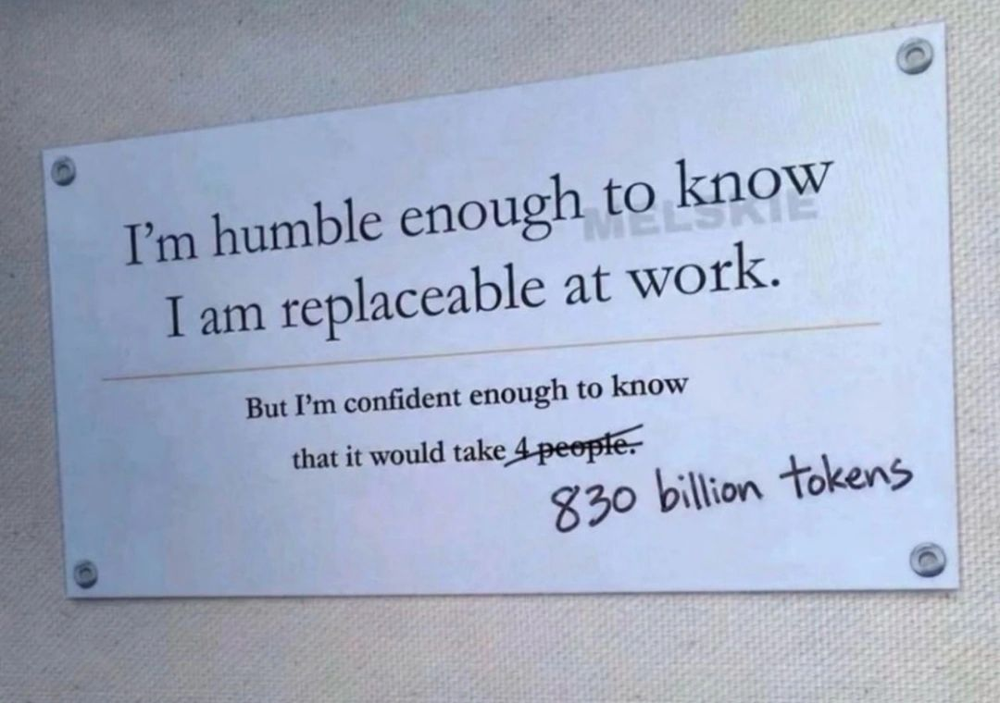

01 / CLINICAL IMAGING
ADC · IVIM · CTRW
Quantitative MRI for precision oncology
Diffusion MRI, multiparametric imaging, and biopsy-correlated radiomic biomarkers for glioma characterization and image-guided care.
Diffusion MRIRadiomicsGlioma
Medical physics · computational imaging · AI
I’m Dr. Rachel Glenn — a medical physicist and computational scientist working at the intersection of quantitative MRI, machine learning, and clinically meaningful decisions.
My work follows a simple premise: better measurements make better decisions. I build bridges between physics, computation, and medicine — translating sophisticated models into tools that can be understood, tested, and trusted.
Today, I’m a Medical Physics Fellow / Resident in Imaging Physics at The University of Texas MD Anderson Cancer Center, where I study quantitative MRI and radiomic biomarkers for precision oncology.
Start a conversation ↗Research in progress across the imaging stack — from the physics of acquisition to models that help clinicians see cellular behavior.
Diffusion MRI, multiparametric imaging, and biopsy-correlated radiomic biomarkers for glioma characterization and image-guided care.
Deep learning and quantum-inspired segmentation methods designed to be robust across protocols, anatomies, and clinical realities.
Building interpretable workflows that connect measurement, modeling, and decisions — in medicine, sensing, and autonomous systems.

“I’m humble enough to know I am replaceable at work. But I’m confident enough to know it would take 4 people 830 billion tokens.”

Every chapter adds a new way of seeing the same question: how do we make complex systems more legible, reliable, and useful?
Department of Imaging Physics · UTHealth / MD Anderson
Quantitative MRI · precision oncology · radiomic biomarkersLockheed Martin
Computational imaging · SAR · quantum computing proposalsUTHealth / MD Anderson
Deep learning · MRI segmentation · treatment planningMSU · Virginia Tech · Lockheed Martin
Quantum chemistry · optical spectroscopy · digital twinsFederal Aviation Administration
Safety-critical radar systems · Unix administration · reliabilityA selection of research outputs. For the complete record, download the CV.
Have a hard problem?